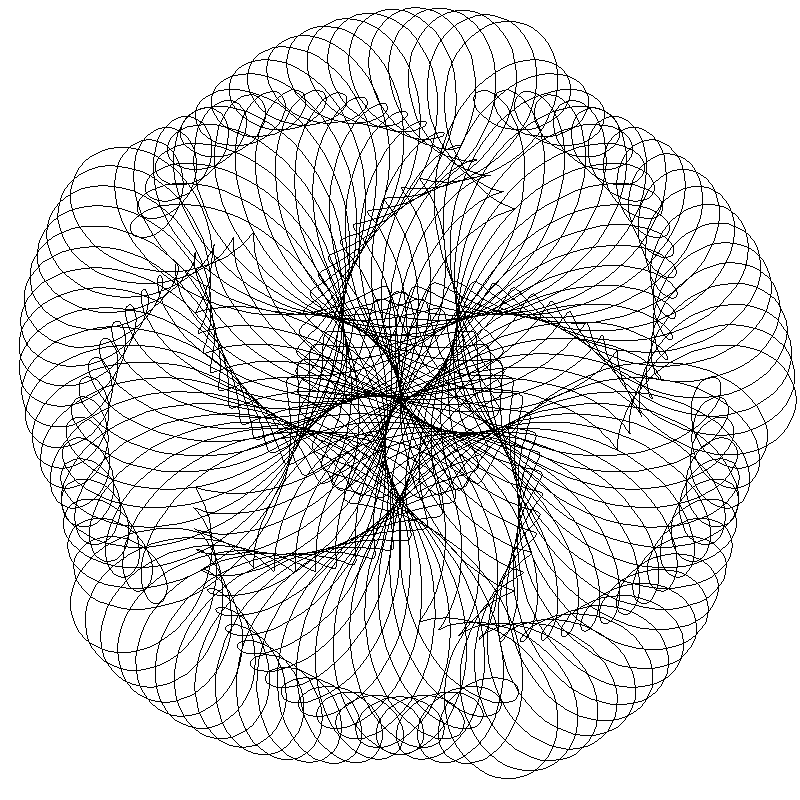

-

The Diddly Darn Double Jumper
Inspired by Nature's most majestic hopper: the sea cucumber, this lasercut hardboard hopper can split into two in mid-air to seemingly double jump. This project was made for a class called Design Nature
Learn More -

The Cycloid Drawing Machine
Made with lasercut gears and customizable linkage arms, this machine will be able to draw fully customizable cycloids. It is still a work in progress.
Learn More -

Olin Electric Motorsports-Accelerator Pedal
Designed for Olin Electric Motorsport's third electric formula SAE racecar. This new pedal has improved geometry for increased ergonomics, a new linear potentiometer, and is lighter than previous iterations.
Learn More -

Olin Robotics Lab: Simon Says
Using computer vision and an arduino, we're trying to make a 6 axis robot arm play simon says with the user. The robot can locate up to four colored buttons, generate a sequence to push them in, and record the user's attempts, turn by turn. It is still a work in progress.
Learn More -

Nerf Dart Tracker
Using computer vision libraries in python, the aim of this project is to be able to film a nerf dart in flight, in order to get really awesome and over dramatic movie shots. It is still a work in progress
Learn More -

Flat Earth Physics
Have you ever wondered what it'd be like to throw a ball on flat earth? In this computer simulation, we modeled how a projectile would fly on a flat earth. Optimal parameters were calculated such that the projectile would come back to the launch site.
Learn More